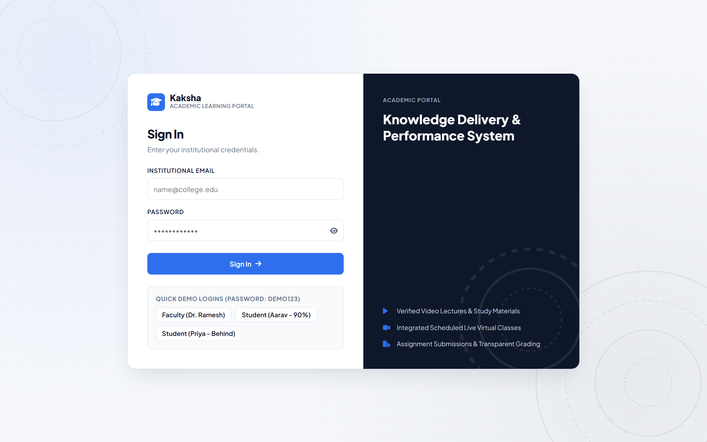
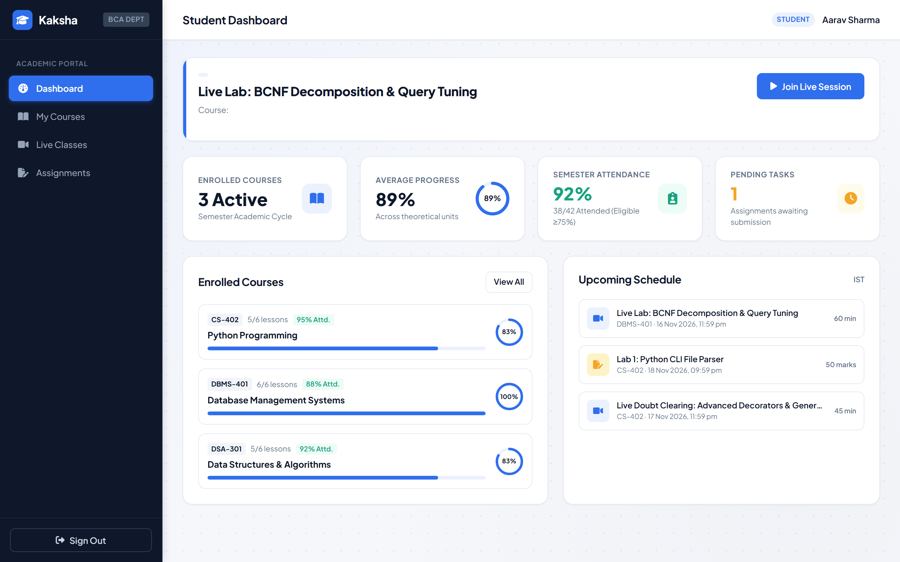
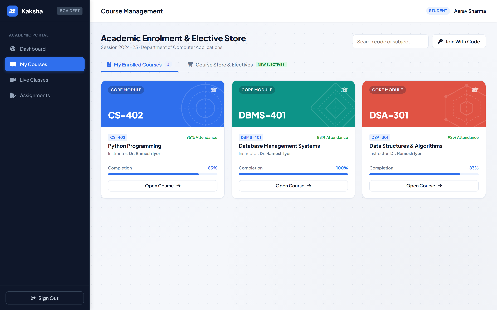
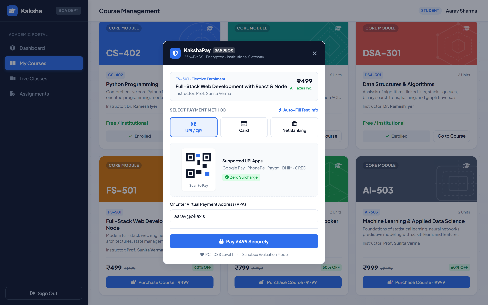
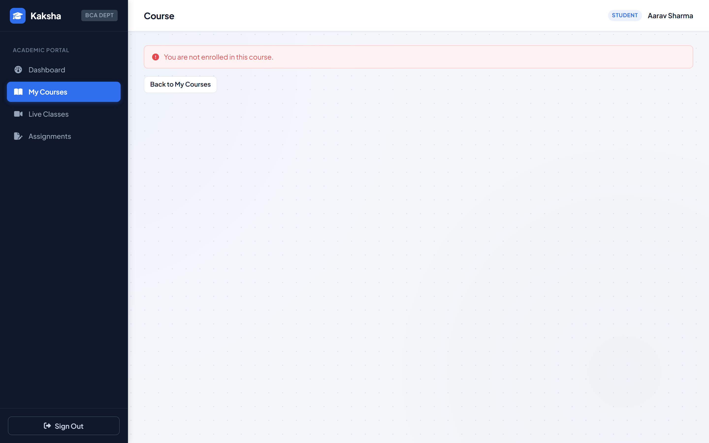
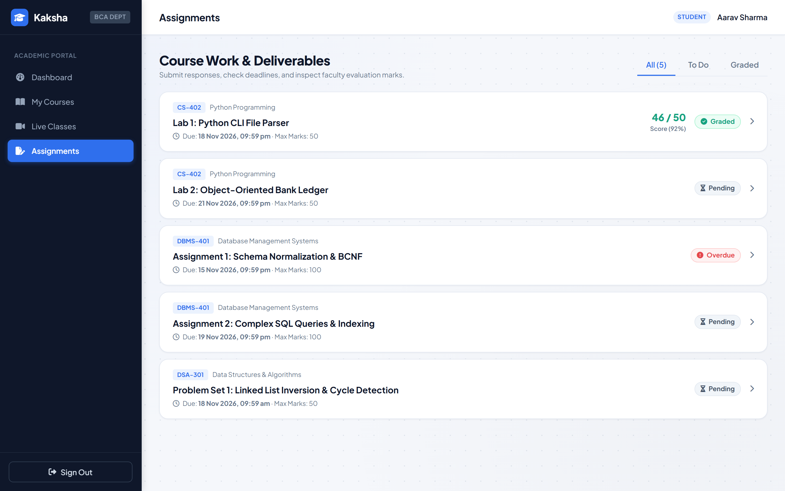
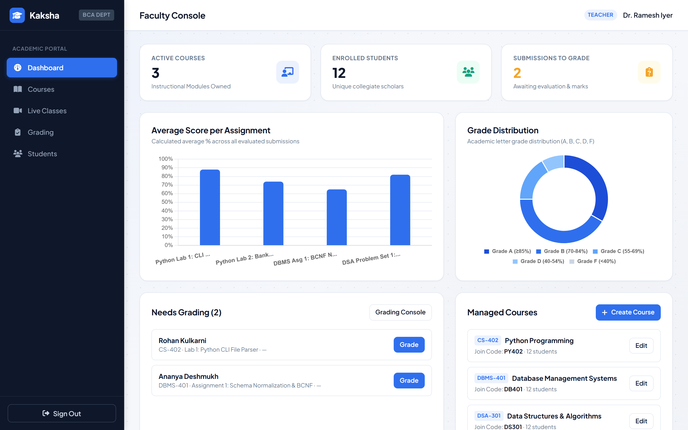
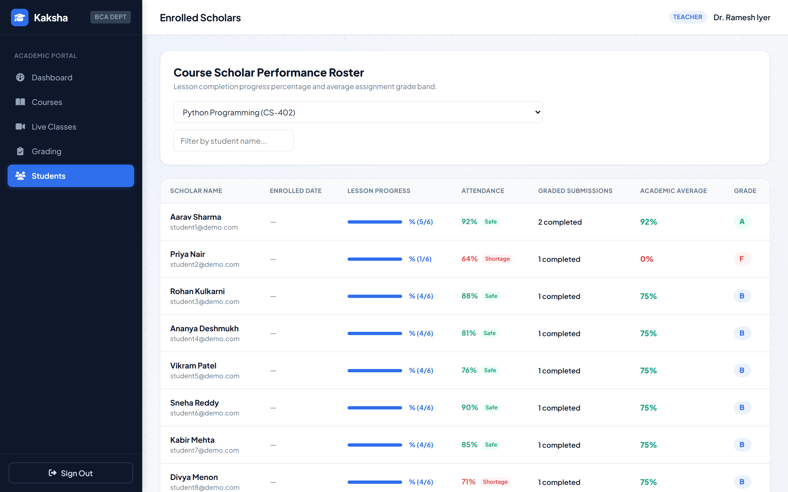

| Student Name: | Swapnil Sahu |
| Program: | BCA (AI & Data Science) |
| PRN / Roll No.: | ADYPU-BCA-2024-042 |
| Semester & Cycle: | Semester IV (2026-27) |
| Project Guide: | Dr. Ramesh Iyer |
This is to certify that the mini project entitled "Kaksha: Academic Learning Management System" submitted by Swapnil Sahu (PRN: ADYPU-BCA-2024-042) is a bonafide work carried out in the Department of Computer Applications, School of Engineering, Ajeenkya DY Patil University, Pune. This project is submitted in partial fulfillment of the requirements for the degree of Bachelor of Computer Applications (AI & Data Science) during the academic year 2026-27.
The practical implementation, system design, source code development, and unit test validations documented in this report have been completed under our direct guidance and supervision. To the best of our knowledge, the work presented here has not been submitted elsewhere for the award of any other degree or diploma.
I express my sincere gratitude to my project guide, Dr. Ramesh Iyer, for his continuous guidance, technical suggestions, and patient code reviews throughout the design and implementation of this system.
I also thank the Head of Department and the faculty members of the Department of Computer Applications for providing the computing environment and laboratory facilities needed to execute and test the software.
I am grateful to Ajeenkya DY Patil University, Pune, for including this practical software engineering curriculum within the Bachelor of Computer Applications program.
Finally, I thank my parents and fellow students for their support, encouragement, and feedback during the development, testing, and documentation of this academic project.
Kaksha is an academic Learning Management System designed to streamline instructional delivery, assignment management, attendance verification, and elective enrollment for university departments. Built using Next.js 14 App Router and Supabase PostgreSQL, the system provides strict role-based isolation between students and faculty members using encrypted HTTP-only session cookies. Faculty members can create structured courses, upload study files to private cloud storage, schedule virtual interactive classes through integrated video conferencing, and evaluate student submissions with automated marks calculation. Students track lesson progress, review verified lecture recordings, submit laboratory exercises, and monitor attendance percentages with automatic warnings for shortages below seventy-five percent. An integrated elective store with a simulated payment gateway (KakshaPay) enables direct self-service enrollment for advanced technical subjects. All business calculations, including completion rates, letter grade boundaries, and next recommended tasks, are executed using a deterministic, rule-based learning engine without external AI dependencies. Unit testing confirms that the application operates reliably and provides an efficient, paperless workflow for academic institutions.
| Chapter | Title / Topic Description | Page No. |
|---|---|---|
| — | Cover Page | 1 |
| — | Certificate of Authenticity and Acknowledgement | 2 |
| — | Abstract and Table of Contents | 3 |
| 1 | Introduction, Problem Statement, Objectives, and Project Scope | 4 |
| 2 | Technology Stack, System Architecture, and Deployment Strategy | 5 |
| 3 | System Design, User Roles, and Entity-Relationship Data Model | 6 |
| 4 | Functional Modules and Rule-Based Core Learning Engine | 7 |
| 5 | System Screenshots (Part 1: Authentication, Portals, and Course Store) | 8 |
| 6 | System Screenshots (Part 2: Lectures, Assignments, Faculty Analytics) | 9 |
| 7 | System Verification, Limitations, Future Scope, Conclusion, References | 10 |
| Table 2.1 | Full-Stack Technology Stack Components and Justifications | Page 5 |
| Table 3.1 | Relational Database Tables and Schema Definitions | Page 6 |
| Figures 1 to 4 | Interface Captures: Login, Dashboard, Courses, and KakshaPay Gateway | Page 8 |
| Figures 5 to 8 | Interface Captures: Syllabus Player, Assignments, Faculty Console, Roster | Page 9 |
| Table 7.1 | Unit and Functional Test Execution Results | Page 10 |
Academic institutions increasingly require centralized digital systems to manage classroom materials, laboratory assignments, scheduled lectures, and student records. In conventional college setups, instructional resources and notices are distributed across messaging groups, personal emails, and loose paper sheets. This causes loss of learning continuity and makes tracking academic progress difficult for both students and instructors.
Kaksha is an academic Learning Management System designed to address these requirements. The name originates from the Sanskrit word for classroom. The application establishes a structured digital environment where instructors organize course modules, publish instructional videos, schedule virtual classroom sessions, collect laboratory submissions, and maintain student attendance and marks records.
Many university departments encounter the following practical challenges in everyday administration:
The primary objectives of the Kaksha platform are as follows:
The system is designed for deployment within university departments, colleges, and polytechnic institutes. It encompasses core computer science subjects (e.g., Python Programming, Database Management Systems, Data Structures & Algorithms) and advanced electives. The scope includes web-based desktop interfaces, serverless API handling, and secure database persistence without requiring third-party proprietary LMS subscriptions.
The application is constructed with modern open-source web technologies selected for reliability, standards compliance, and maintainability.
| Layer | Technology | Technical Justification |
|---|---|---|
| Runtime & Language | JavaScript (Node.js ES6+) | Unified programming language across client components, route handlers, and data transformation scripts. |
| Web Framework | Next.js 14 (App Router) | React Server Components, server actions, dynamic route handlers, client-side caching, and production build optimization. |
| Relational Database | PostgreSQL 15 (Supabase) | ACID transactions, foreign key constraints, unique indexes, and PostgreSQL JSON query capabilities. |
| Session Security | JOSE & bcryptjs | Stateless JSON Web Tokens signed with HS256, stored in HTTP-only SameSite cookies. Passwords hashed using bcrypt. |
| Cloud File Storage | Supabase Storage | Private file bucket (kaksha-files) with authenticated pre-signed URL generation for reading and uploading assignments. |
| Data Visualization | Chart.js & react-chartjs-2 | Interactive canvas-based bar charts for assignment averages and donut charts for class letter grade distribution. |
| Live Video Classes | Jitsi Meet IFrame API | Low-latency WebRTC video conferencing for real-time lectures without requiring proprietary licenses. |
| Styling & UI | Pure Modular CSS | Clean, institutional color system without heavy UI libraries, ensuring rapid page loading and crisp rendering. |
| Testing & Automation | Node.js & Playwright | Automated unit tests for business logic functions and end-to-end headless browser testing for UI flows. |
The system is designed for deployment on the Vercel Serverless Platform connected to a managed Supabase PostgreSQL cloud instance.
SUPABASE_URL, SUPABASE_SERVICE_KEY, SESSION_SECRET) are configured directly in Vercel environment settings and omitted from public version control.lib/demoData.js) to prevent user-facing downtime.The application enforces strict separation of privileges between two primary roles:
The database consists of eight normalized relational tables in PostgreSQL:
| Table Name | Primary & Key Attributes | Relational Constraints & Rules |
|---|---|---|
| users | id (PK), email (UQ), password_hash, name, role | role CHECK ('student', 'teacher'). Email is unique institutional login. |
| courses | id (PK), code (UQ), title, price, join_code (UQ), teacher_id | teacher_id references users(id) ON DELETE CASCADE. price >= 0. |
| enrollments | id (PK), course_id, student_id, payment_id, amount_paid | UNIQUE (course_id, student_id). Links students to their courses. |
| lessons | id (PK), course_id, title, type, url, order_no | type CHECK ('video', 'material'). Ordered sequentially. |
| lesson_progress | id (PK), lesson_id, student_id, completed_at | UNIQUE (lesson_id, student_id). Tracks unit completions. |
| live_sessions | id (PK), course_id, title, room_name, starts_at, duration_min | Stores scheduled live classes and Jitsi room names. |
| assignments | id (PK), course_id, title, instructions, due_at, max_marks | Holds lab requirements, due dates, and grading scales. |
| submissions | id (PK), assignment_id, student_id, file_path, marks | UNIQUE (assignment_id, student_id). Evaluated by faculty. |
The system is organized into modular subsystems:
All academic business logic is encapsulated within lib/learningEngine.js as pure, deterministic functions without side effects:
Progress = Math.round((completed / total) * 100).Consider student Aarav Sharma in course CS-402 (Python Programming):
Math.round((5 / 6) * 100) = 83%.Math.round((44 / 50) * 100) = 88% → Grade A.(38 / 42) * 100 = 90.5% ≈ 91% → Safe.(27 / 42) * 100 = 64% → Shortage (<75%).export function assignmentStatus(assignment, submission, now = new Date()) {
const dueDate = new Date(assignment.due_at);
if (submission) {
const isLate = new Date(submission.submitted_at).getTime() > dueDate.getTime();
if (submission.marks !== null && submission.marks !== undefined) {
return { status: 'Graded', isLate, isOverdue: false, isPending: false };
}
return { status: 'Submitted', isLate, isOverdue: false, isPending: false };
}
const isOverdue = new Date(now).getTime() > dueDate.getTime();
return isOverdue
? { status: 'Overdue', isLate: false, isOverdue: true, isPending: false }
: { status: 'Pending', isLate: false, isOverdue: false, isPending: true };
}







| Test ID | Test Scenario / Action | Expected Outcome | Actual Result | Status |
|---|---|---|---|---|
| TC-01 | Login with valid demo credentials | Sets HTTP-only JWT cookie and redirects by role | Redirected to role portal | PASS |
| TC-02 | Join course via join code "PY402" | Enrolls student and adds course to active grid | Enrolled with 0% initial progress | PASS |
| TC-03 | Complete lesson unit completion | Updates lesson progress and increments percentage | Progress recomputed to 100% | PASS |
| TC-04 | Submit assignment after due date | Flags submission with "Late" status tag | Tagged Late accurately | PASS |
| TC-05 | Faculty grades submission (44/50) | Calculates 88% and assigns Grade Letter A | Grade A recorded in database | PASS |
| TC-06 | Attendance evaluation (<75%) | Displays red "Shortage" warning chip | Shortage displayed on dashboard | PASS |
| TC-07 | KakshaPay simulated purchase (₹499) | Generates transaction ID and enrolls student | Enrolled with instant access | PASS |
Limitations:
Future Scope:
The Kaksha Academic Learning Management System successfully addresses the challenges of institutional course coordination, assignment evaluation, and attendance tracking. The application proves that a performant and reliable educational portal can be implemented with clean architecture, strict relational schemas, and rule-based computations without bloated external dependencies. The separation of student and faculty portals ensures focused workflows for all stakeholders. The system is ready for university deployment and future extension.
[1] Next.js 14 App Router Documentation, Vercel Inc., 2024. Available: https://nextjs.org/docs
[2] PostgreSQL 15.0 Database Documentation, The PostgreSQL Global Development Group, 2023. Available: https://www.postgresql.org/docs/
[3] Supabase Open Source Documentation, Supabase Inc., 2024. Available: https://supabase.com/docs
[4] JOSE: JSON Object Signing and Encryption for Node.js, Panva, 2024. Available: https://github.com/panva/jose
[5] Chart.js: Flexible JavaScript Charting for Developers, Chart.js Community, 2024. Available: https://www.chartjs.org